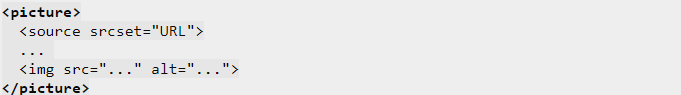

Элемент picture представляет собой контейнер для хранения нескольких элементов source , каждый из которых содержит имена файлов альтернативных версий одного и того же изображения вместе с условиями, при которых те должны быть загружены. Это позволяет указывать разные изображения с учётом размера экрана, плотности пикселей, формата изображения и других параметров. Выбранный браузером вариант изображения выводится с помощью вложенного элемента img. Элемент picture может ускорить загрузку ваших сайтов, особенно на мобильных девайсах.
Вот несколько областей применения элемента picture :
Синтаксис
Пример использования: В следующем примере загружаемое изображение зависит от размера экрана:
В следующем примере загружаемое изображение в формате WEBP, если браузер не поддерживает его, загрузится в формате jpg :